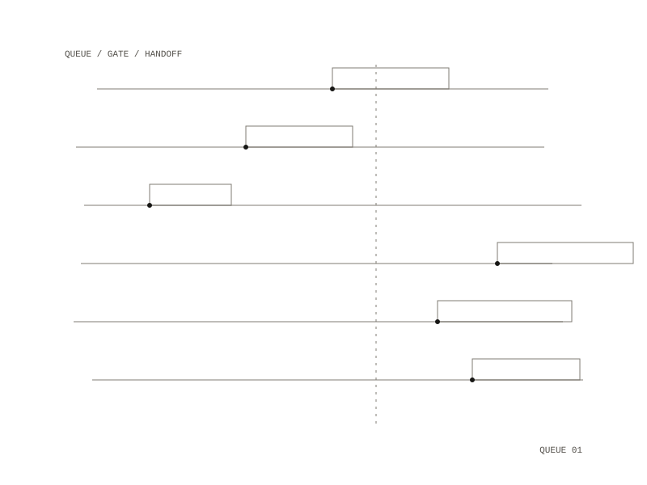

briefs
briefs is one queue for work across many projects: a playbook with each project's next command and prompt, one brief file per project, one-off task files, and a ranked list of what to do next.

The queue
Each item in the queue is one line naming an outcome, a gate and a size, and what comes next is the top unticked line. One line is one fresh session with one goal, and when the session stops its handoff goes back into the queue. Full briefs live in `
Waiting on Eon
When an agent stops, it writes what it needs from Eon straight away: into that project's own queue file when the item names one repository, and otherwise into this folder's queue. The wait-on-eon script adds or removes one item, or lists them all, under a "Waiting on Eon" heading, so an item written there survives a session that dies. Adding the same item twice does nothing, and removing an item needs its exact text. The script takes a lock on the file and writes it atomically, so agents running in parallel cannot overwrite each other's items. Items have to be - bullets, because Eon's dashboard does not read numbered lists.
The waiting-all script prints every waiting item across every project, one tab-separated line each with the date the file last changed, the project, the file's path and the item. It finds each project's repository from its record in the research vault, also picks up queue files on disk that no record reaches, and flags numbered items that the dashboard cannot show. The oldest queue files come first.
Where a run stops
Even unattended, a run stops for taste, listening, hand tests, failing gates, and anything that publishes, installs, spends money or cannot be undone. The playbook's rule is that a session does not run past one goal.
a playbook, one brief per project, one-off tasks, a ranked queue
two Python command-line scripts